How fire shaped us
How fire shaped humanity, our brain, and why belonging became our primary survival instinct. Move through it in time, from before fire to the body we still carry.
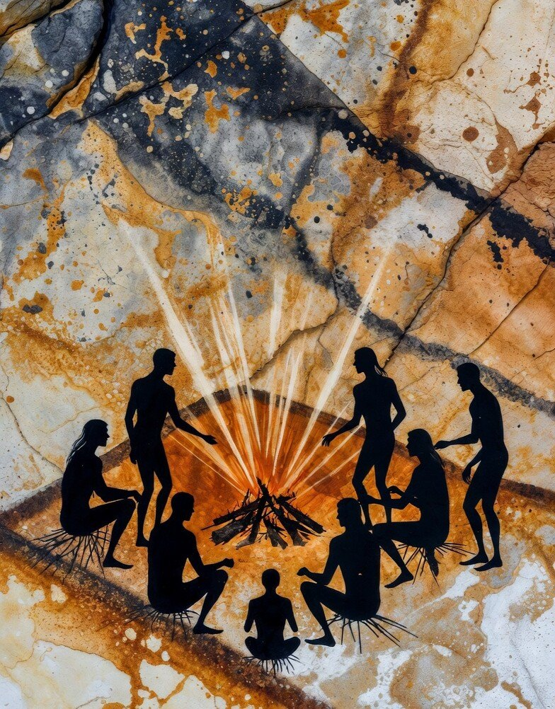
01
Before fire
We lived in small groups of ten to thirty, and most of the body's energy was spent on chewing and digestion. A basic interdependence was already there, in collective defence and shared foraging.
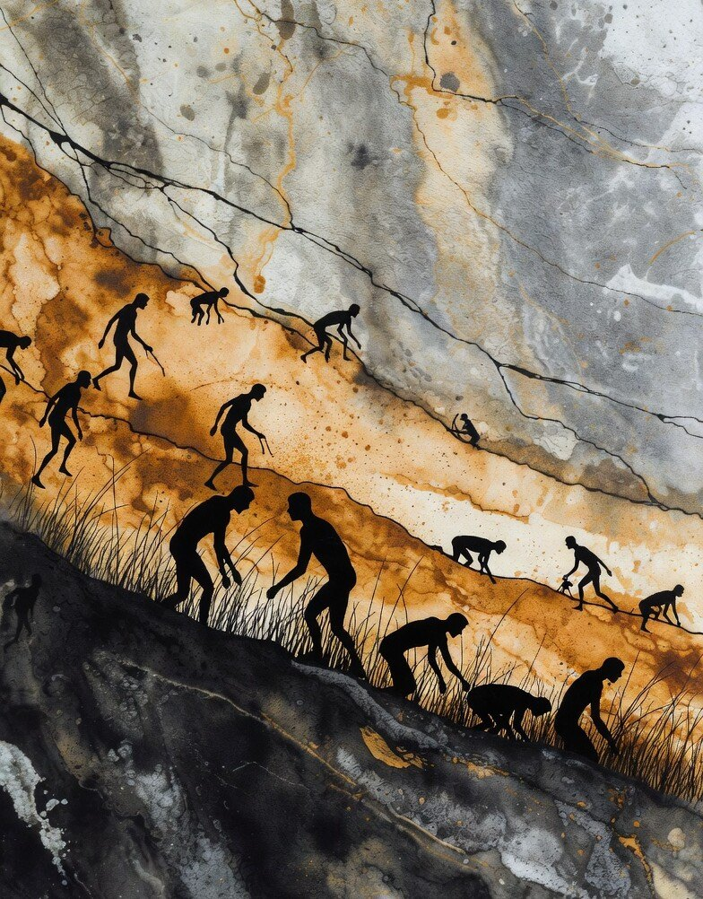
02
Controlling the fire
There is evidence of fire use from one and a half to two million years ago, and habitual controlled use from around four hundred thousand years ago. It was the first technology that reshaped the environment rather than adapting to it.
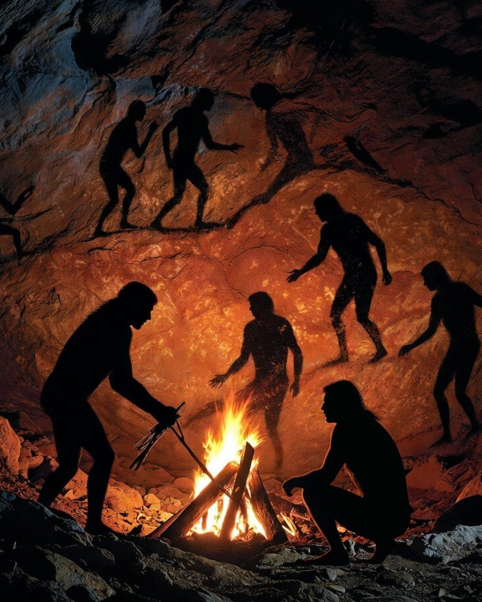
03
Energy dependence
The fire had to be obtained, maintained and fed every day, so we externalised our energy source and became fuel dependent. It warmed the body from outside, reducing the energy spent keeping warm, and cooking broke down food before the body had to, yielding thirty to fifty per cent more usable energy. The gut shrank, the jaw lightened, and the cost of digestion dropped.
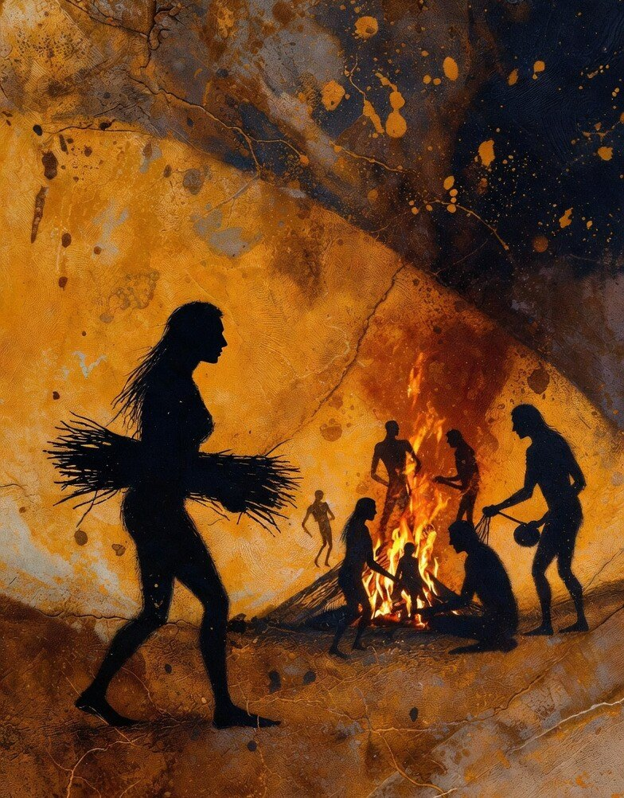
04
The new evening
Fire created several safe, warm, lit hours every evening, and for the first time humans had predictable shared time not consumed by survival. People sat together, sang, told stories, laughed and touched, every night, for hundreds of thousands of years.
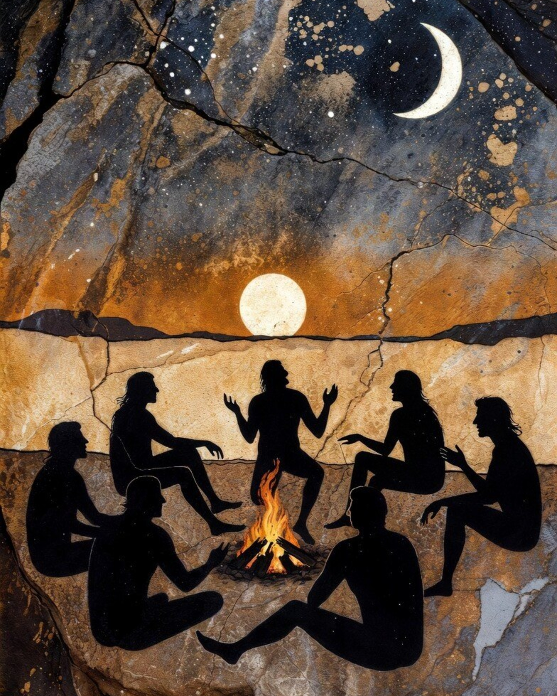
05
The social brain
The energy freed by cooking made a larger brain possible. The brain is two per cent of body weight and uses twenty per cent of our energy, and the prefrontal cortex expanded specifically to manage social complexity. Dunbar's number is the limit of this, roughly one hundred and fifty stable relationships, and beyond it groups need external mechanisms to hold together, shared symbols, beauty, rules.
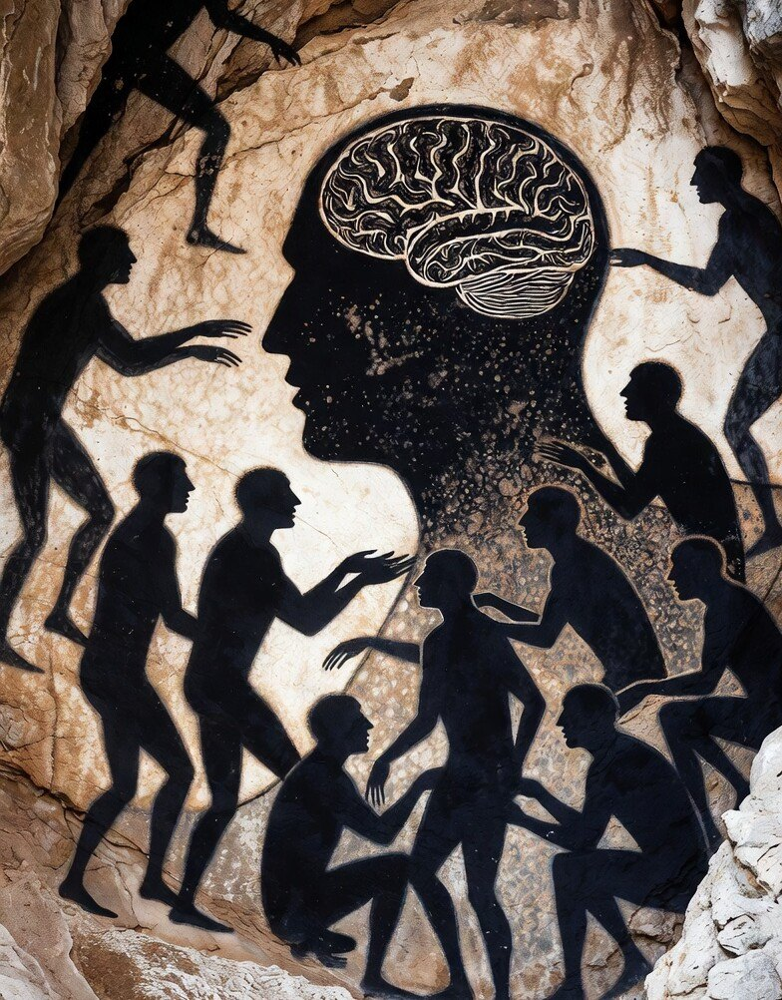
06
Interdependence and the cost of exclusion
Fire created the first true division of labour, collecting wood, tending the fire, hunting, processing food, and no individual could survive alone on the savannah. Being part of the group became the primary condition for survival, and social exclusion registers as real physical pain, to make sure we never risk it.
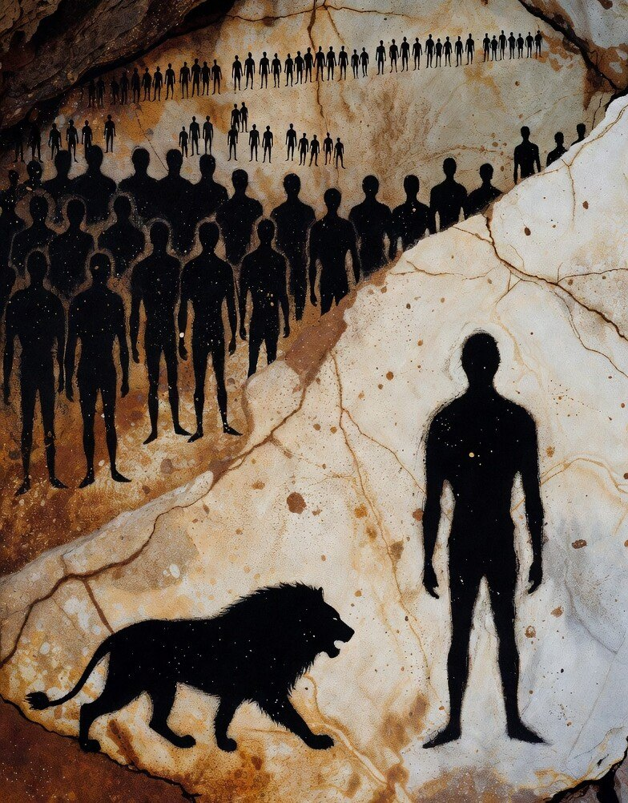
07
Language
The safe evening hours gave language room to evolve beyond basic communication, and that time was overwhelmingly used for storytelling. Language became the tool for managing relationships, transmitting knowledge and building identity, and with it gossip, reputation and social knowledge became possible.
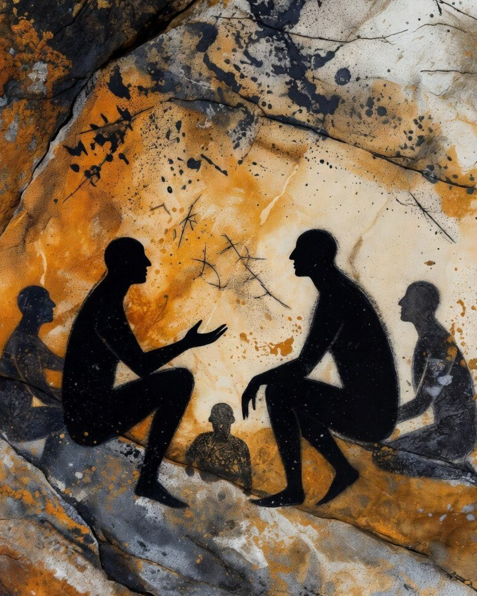
08
Storytelling and the brain
The listener's brain synchronises with the speaker's, so a single storyteller can bring an entire room into the same neural state. Every evening was practice in empathy, perspective-taking and cooperation through narrative, and a story is remembered where bare facts are not.
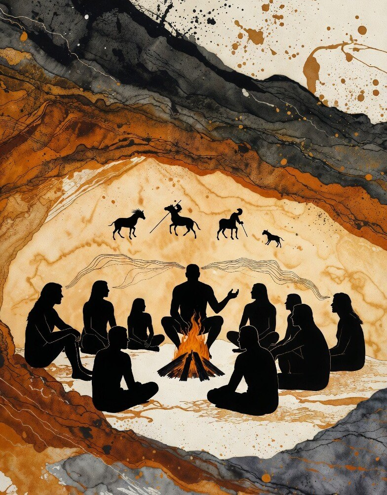
09
Storytelling and cultural evolution
Storytelling let knowledge build across generations without waiting for genes to change, and biology and culture began to accelerate each other. This is what makes us exceptional, the collective ability to accumulate and transmit knowledge.
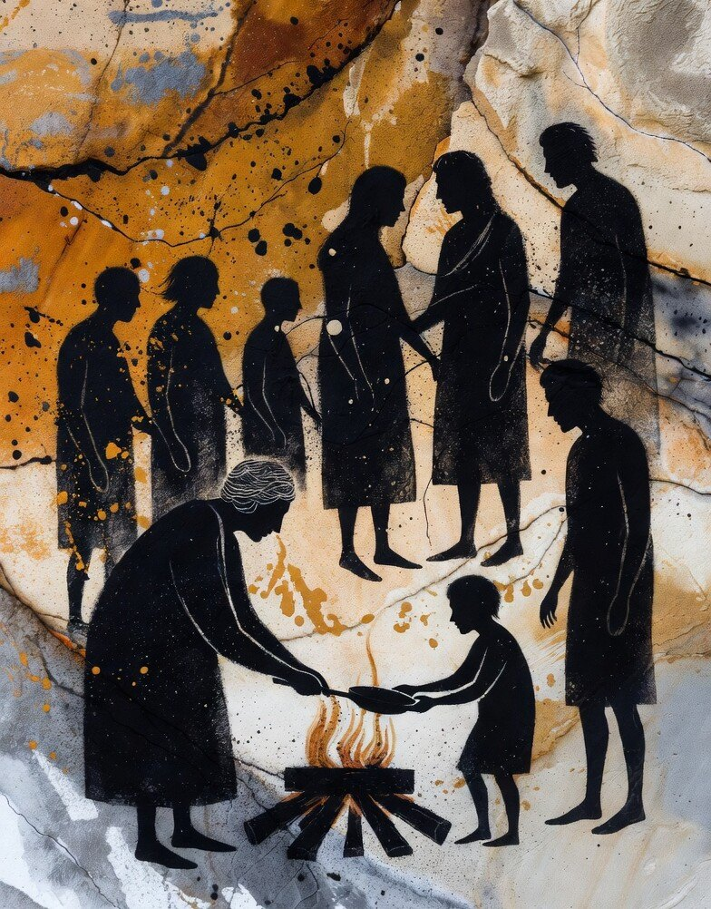
10
The hearth
The hearth became the centre of the first settlements, and this is the beginning of home. In the evening hours, humans began making ornaments, patterns and objects. The Latin word for hearth is focus, the thing everything is organised around.
11
Beauty
Humans began making things beautiful, ornaments, patterns, body decoration. Beauty signals group membership at a glance, to strangers, without words, and beyond Dunbar's hundred and fifty, shared aesthetic codes are how trust is established at scale. Beauty also creates pleasure, builds attachment to places and objects, and strengthens bonds.
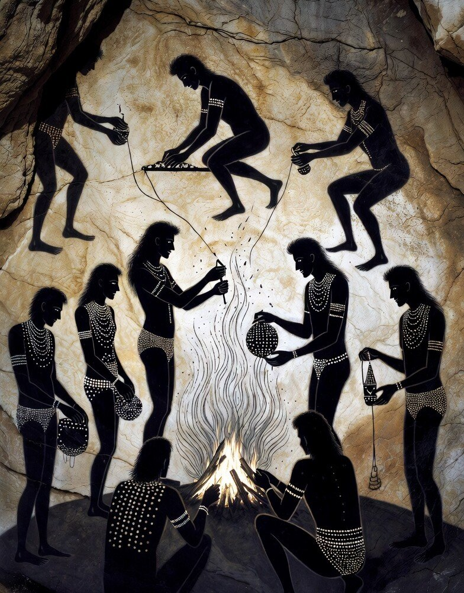
12
Belonging
Fire created a new kind of belonging, shared experience, shared identity, shared regulation. Humans are co-regulators, the fastest way to feel safe is with each other. By the fire we practised all of these signals together, every night, for hundreds of thousands of years. I belong, I am safe: the body shifts from the sympathetic nervous system of action and fight or flight to the parasympathetic of rest, digest and heal.
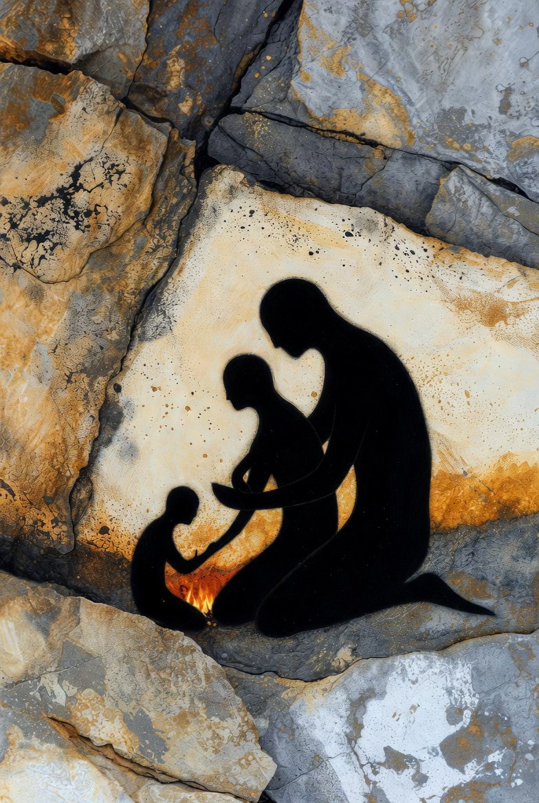